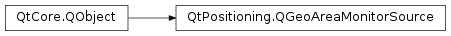

QGeoAreaMonitorSource¶
Synopsis¶
Functions¶
- def
sourceName()
Virtual functions¶
- def
activeMonitors() - def
activeMonitors(lookupArea) - def
error() - def
positionInfoSource() - def
requestUpdate(monitor, signal) - def
setPositionInfoSource(source) - def
startMonitoring(monitor) - def
stopMonitoring(monitor) - def
supportedAreaMonitorFeatures()
Signals¶
- def
areaEntered(monitor, update) - def
areaExited(monitor, update) - def
error(error) - def
monitorExpired(monitor)
Static functions¶
- def
availableSources() - def
createDefaultSource(parent) - def
createSource(sourceName, parent)
Detailed Description¶
The
PySide2.QtPositioning.QGeoAreaMonitorSourceclass enables the detection of proximity changes for a specified set of coordinates.A
PySide2.QtPositioning.QGeoAreaMonitorSourceemits signals when the current position is in range, or has moved out of range, of a specified area. Each area is specified by aPySide2.QtPositioning.QGeoAreaMonitorInfoobject. For example:public: MyClass() : QObject() { QGeoAreaMonitorSource *monitor = QGeoAreaMonitorSource::createDefaultSource(this); if (monitor) { connect(monitor, SIGNAL(areaEntered(QGeoAreaMonitorInfo,QGeoPositionInfo)), this, SLOT(areaEntered(QGeoAreaMonitorInfo,QGeoPositionInfo))); connect(monitor, SIGNAL(areaExited(QGeoAreaMonitorInfo,QGeoPositionInfo)), this, SLOT(areaExited(QGeoAreaMonitorInfo,QGeoPositionInfo))); QGeoAreaMonitorInfo bigBen("Big Ben"); QGeoCoordinate position(51.50104, -0.124632); bigBen.setArea(QGeoCircle(position, 100)); monitor->startMonitoring(bigBen); } else { qDebug() << "Could not create default area monitor"; } } public Q_SLOTS: void areaEntered(const QGeoAreaMonitorInfo &mon, const QGeoPositionInfo &update) { Q_UNUSED(mon) qDebug() << "Now within 100 meters, current position is" << update.coordinate(); } void areaExited(const QGeoAreaMonitorInfo &mon, const QGeoPositionInfo &update) { Q_UNUSED(mon) qDebug() << "No longer within 100 meters, current position is" << update.coordinate(); }
QGeoAreaMonitorSourcefollows a singleton pattern. Each instance of the class with the samePySide2.QtPositioning.QGeoAreaMonitorSource.sourceName()shares the same area monitoring backend. If a newPySide2.QtPositioning.QGeoAreaMonitorInfoobject is added viaPySide2.QtPositioning.QGeoAreaMonitorSource.startMonitoring()orPySide2.QtPositioning.QGeoAreaMonitorSource.requestUpdate()it can be retrieved by another instance of this class (provided that they are sourced from the same area monitor provider plug-in). The same singleton pattern applies to thePySide2.QtPositioning.QGeoPositionInfoSourceinstance used by this class. The following code snippet emphasizes the behavior:QGeoAreaMonitorSource *s1 = QGeoAreaMonitorSource::createSource("blah", this); QGeoAreaMonitorSource *s2 = QGeoAreaMonitorSource::createSource("blah", this); QVERIFY(s1->positionInfoSource() == s2->positionInfoSource);
-
class
PySide2.QtPositioning.QGeoAreaMonitorSource(parent)¶ Parameters: parent – PySide2.QtCore.QObjectCreates a monitor with the given
parent.
-
PySide2.QtPositioning.QGeoAreaMonitorSource.Error¶ Defines the types of positioning methods.
The Error enumeration represents the errors which can occur.
Constant Description QGeoAreaMonitorSource.AccessError The connection setup to the remote area monitoring backend failed because the application lacked the required privileges. QGeoAreaMonitorSource.InsufficientPositionInfo The area monitoring source could not retrieve a location fix or the accuracy of the fix is not high enough to provide an effective area monitoring. QGeoAreaMonitorSource.NoError No error has occurred. QGeoAreaMonitorSource.UnknownSourceError An unidentified error occurred.
-
PySide2.QtPositioning.QGeoAreaMonitorSource.AreaMonitorFeature¶ Defines the types of area monitoring capabilities.
Constant Description QGeoAreaMonitorSource.PersistentAreaMonitorFeature PySide2.QtPositioning.QGeoAreaMonitorInfoinstances can be made persistent. A persistent monitor continues to be active even when the application managing the monitor is not running.QGeoAreaMonitorSource.AnyAreaMonitorFeature Matches all possible area monitoring features.
-
PySide2.QtPositioning.QGeoAreaMonitorSource.activeMonitors()¶ Return type: Returns the list of all active monitors known to the
PySide2.QtPositioning.QGeoAreaMonitorSourceobject.An active monitor was started via
PySide2.QtPositioning.QGeoAreaMonitorSource.startMonitoring()the source object will emit the required signals such asPySide2.QtPositioning.QGeoAreaMonitorSource.areaEntered()orPySide2.QtPositioning.QGeoAreaMonitorSource.areaExited(). MultiplePySide2.QtPositioning.QGeoAreaMonitorSourceinstances within the same application share the same active monitor objects.Unless an active
PySide2.QtPositioning.QGeoAreaMonitorInfoPySide2.QtPositioning.QGeoAreaMonitorInfo.isPersistent()an activePySide2.QtPositioning.QGeoAreaMonitorInfowill be stopped once the current application terminates.
-
PySide2.QtPositioning.QGeoAreaMonitorSource.activeMonitors(lookupArea) Parameters: lookupArea – PySide2.QtPositioning.QGeoShapeReturn type: Returns the list of all active monitors known to the
PySide2.QtPositioning.QGeoAreaMonitorSourceobject whose center lies withinlookupArea. IflookupAreais empty the returned list will be empty.An active monitor was started via
PySide2.QtPositioning.QGeoAreaMonitorSource.startMonitoring()and the source object will emit the required signals such asPySide2.QtPositioning.QGeoAreaMonitorSource.areaEntered()orPySide2.QtPositioning.QGeoAreaMonitorSource.areaExited(). MultiplePySide2.QtPositioning.QGeoAreaMonitorSourceinstances within the same application share the same monitor objects.Unless an active
PySide2.QtPositioning.QGeoAreaMonitorInfoPySide2.QtPositioning.QGeoAreaMonitorInfo.isPersistent()an activePySide2.QtPositioning.QGeoAreaMonitorInfowill be stopped once the current application terminates.See also
-
PySide2.QtPositioning.QGeoAreaMonitorSource.areaEntered(monitor, update)¶ Parameters: - monitor –
PySide2.QtPositioning.QGeoAreaMonitorInfo - update –
PySide2.QtPositioning.QGeoPositionInfo
- monitor –
-
PySide2.QtPositioning.QGeoAreaMonitorSource.areaExited(monitor, update)¶ Parameters: - monitor –
PySide2.QtPositioning.QGeoAreaMonitorInfo - update –
PySide2.QtPositioning.QGeoPositionInfo
- monitor –
-
static
PySide2.QtPositioning.QGeoAreaMonitorSource.availableSources()¶ Return type: list of strings Returns a list of available monitor plugins, including the default system backend if one is available.
-
static
PySide2.QtPositioning.QGeoAreaMonitorSource.createDefaultSource(parent)¶ Parameters: parent – PySide2.QtCore.QObjectReturn type: PySide2.QtPositioning.QGeoAreaMonitorSourceCreates and returns a monitor with the given
parentthat monitors areas using resources on the underlying system.Returns 0 if the system has no support for position monitoring.
-
static
PySide2.QtPositioning.QGeoAreaMonitorSource.createSource(sourceName, parent)¶ Parameters: - sourceName – unicode
- parent –
PySide2.QtCore.QObject
Return type: Creates and returns a monitor with the given
parent, by loading the plugin namedsourceName.Returns 0 if the plugin cannot be found.
-
PySide2.QtPositioning.QGeoAreaMonitorSource.error(error)¶ Parameters: error – PySide2.QtPositioning.QGeoAreaMonitorSource.Error
-
PySide2.QtPositioning.QGeoAreaMonitorSource.error() Return type: PySide2.QtPositioning.QGeoAreaMonitorSource.ErrorReturns the type of error that last occurred.
-
PySide2.QtPositioning.QGeoAreaMonitorSource.monitorExpired(monitor)¶ Parameters: monitor – PySide2.QtPositioning.QGeoAreaMonitorInfo
-
PySide2.QtPositioning.QGeoAreaMonitorSource.positionInfoSource()¶ Return type: PySide2.QtPositioning.QGeoPositionInfoSourceReturns the current
PySide2.QtPositioning.QGeoPositionInfoSourceused by thisPySide2.QtPositioning.QGeoAreaMonitorSourceobject. The function will returnQGeoPositionInfoSource.createDefaultSource()if no other object has been set.The function returns 0 if not even a default
PySide2.QtPositioning.QGeoPositionInfoSourceexists.Any usage of the returned
PySide2.QtPositioning.QGeoPositionInfoSourceinstance should account for the fact that it may reside in a different thread.
-
PySide2.QtPositioning.QGeoAreaMonitorSource.requestUpdate(monitor, signal)¶ Parameters: - monitor –
PySide2.QtPositioning.QGeoAreaMonitorInfo - signal – str
Return type: PySide2.QtCore.boolEnables single shot area monitoring. Area monitoring for
monitorwill be performed until thisPySide2.QtPositioning.QGeoAreaMonitorSourceinstance emitssignalfor the first time. Once the signal was emitted,monitoris automatically removed from the list ofPySide2.QtPositioning.QGeoAreaMonitorSource.activeMonitors(). Ifmonitoris invalid or has an expiry date that has been passed this function returns false.QGeoAreaMonitor singleShotMonitor; QGeoAreaMonitorSource * source = QGeoAreaMonitorSource::createDefaultSource(this); //... bool ret = source->requestUpdate(singleShotMonitor, SIGNAL(areaExited(QGeoAreaMonitor,QGeoPositionInfo)));
The above
singleShotMonitorobject will cease to send updates once thePySide2.QtPositioning.QGeoAreaMonitorSource.areaExited()signal was emitted for the first time. Until this point in time any other signal may be emitted zero or more times depending on the area context.It is not possible to simultanously request updates for more than one signal of the same monitor object. The last call to this function determines the signal upon which the updates cease to continue. At this stage only the
PySide2.QtPositioning.QGeoAreaMonitorSource.areaEntered()andPySide2.QtPositioning.QGeoAreaMonitorSource.areaExited()signals can be used to terminate the monitoring process.Requesting persistent monitoring on a
PySide2.QtPositioning.QGeoAreaMonitorSourceinstance fails if the area monitoring backend doesn’t supportQGeoAreaMonitorSource.PersistentAreaMonitorFeature.If
monitorwas already registered viaPySide2.QtPositioning.QGeoAreaMonitorSource.startMonitoring()it is converted to a single shot behavior.- monitor –
-
PySide2.QtPositioning.QGeoAreaMonitorSource.setPositionInfoSource(source)¶ Parameters: source – PySide2.QtPositioning.QGeoPositionInfoSourceSets the new
PySide2.QtPositioning.QGeoPositionInfoSourceto be used by thisPySide2.QtPositioning.QGeoAreaMonitorSourceobject. The area monitoring backend becomes the newPySide2.QtCore.QObjectparent fornewSource. The previousPySide2.QtPositioning.QGeoPositionInfoSourceobject will be deleted. AllPySide2.QtPositioning.QGeoAreaMonitorSourceinstances based on the samePySide2.QtPositioning.QGeoAreaMonitorSource.sourceName()share the samePySide2.QtPositioning.QGeoPositionInfoSourceinstance.This may be useful when it is desirable to manipulate the positioning system used by the area monitoring engine.
Note that ownership must be taken care of by subclasses of
PySide2.QtPositioning.QGeoAreaMonitorSource. Due to the singleton pattern behind this classnewSourcemay be moved to a new thread.
-
PySide2.QtPositioning.QGeoAreaMonitorSource.sourceName()¶ Return type: unicode Returns the unique name of the area monitor source implementation in use.
This is the same name that can be passed to
PySide2.QtPositioning.QGeoAreaMonitorSource.createSource()in order to create a new instance of a particular area monitor source implementation.
-
PySide2.QtPositioning.QGeoAreaMonitorSource.startMonitoring(monitor)¶ Parameters: monitor – PySide2.QtPositioning.QGeoAreaMonitorInfoReturn type: PySide2.QtCore.boolReturns
trueif the monitoring ofmonitorcould be successfully started; otherwise returns false. A reason for not being able to start monitoring could be the unavailability of an appropriate default position info source while no alternativePySide2.QtPositioning.QGeoPositionInfoSourcehas been set viaPySide2.QtPositioning.QGeoAreaMonitorSource.setPositionInfoSource().If
monitoris already active the existing monitor object will be replaced by the newmonitorreference. The identification ofPySide2.QtPositioning.QGeoAreaMonitorInfoinstances happens viaQGeoAreaMonitorInfo.identifier(). Therefore this function can also be used to update active monitors.If
monitorhas an expiry date that has been passed this function returns false. Calling this function for an already viaPySide2.QtPositioning.QGeoAreaMonitorSource.requestUpdate()registered single shot monitor switches the monitor to a permanent monitoring mode.Requesting persistent monitoring on a
PySide2.QtPositioning.QGeoAreaMonitorSourceinstance fails if the area monitoring backend doesn’t supportQGeoAreaMonitorSource.PersistentAreaMonitorFeature.
-
PySide2.QtPositioning.QGeoAreaMonitorSource.stopMonitoring(monitor)¶ Parameters: monitor – PySide2.QtPositioning.QGeoAreaMonitorInfoReturn type: PySide2.QtCore.boolReturns true if
monitorwas successfully removed from the list ofPySide2.QtPositioning.QGeoAreaMonitorSource.activeMonitors(); otherwise returns false. This behavior is independent on whethermonitorwas registered viaPySide2.QtPositioning.QGeoAreaMonitorSource.startMonitoring()orPySide2.QtPositioning.QGeoAreaMonitorSource.requestUpdate().
-
PySide2.QtPositioning.QGeoAreaMonitorSource.supportedAreaMonitorFeatures()¶ Return type: PySide2.QtPositioning.QGeoAreaMonitorSource.AreaMonitorFeaturesReturns the area monitoring features available to this source.
© 2018 The Qt Company Ltd. Documentation contributions included herein are the copyrights of their respective owners. The documentation provided herein is licensed under the terms of the GNU Free Documentation License version 1.3 as published by the Free Software Foundation. Qt and respective logos are trademarks of The Qt Company Ltd. in Finland and/or other countries worldwide. All other trademarks are property of their respective owners.